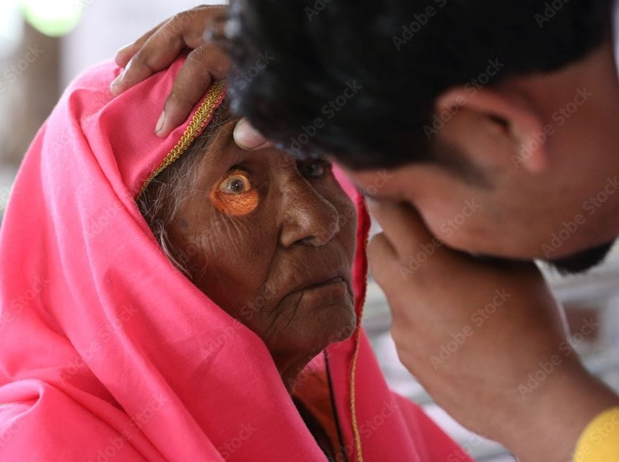
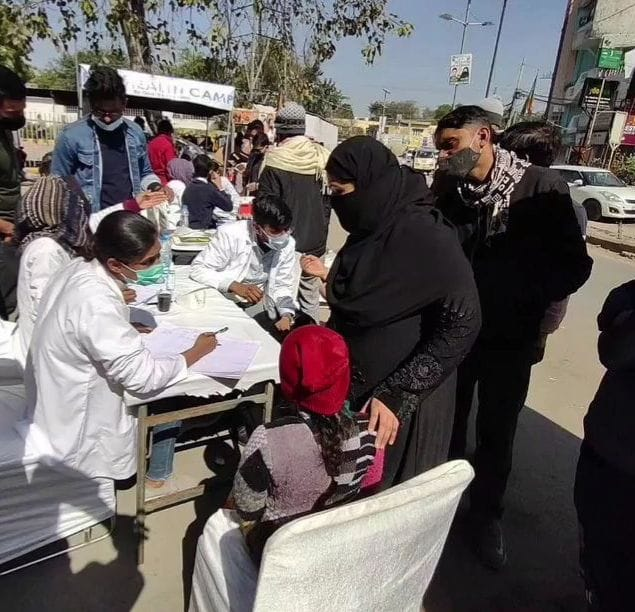
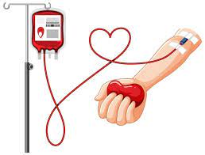

Vision Care & Blindness Control
The Red club health foundation is an organization that has made significant strides in improving the vision
of individuals in need. Through its various initiatives and programs, the foundation has played a
pivotal role in addressing eye health issues, particularly in underserved and impoverished
communities. Here’s an overview of how The Red club health foundation has contributed to improving eye
health and vision.
reduce the backlog of blindness through identification and treatment of the blind. To develop comprehensive eye care facilities in every district. To develop human resources for providing eye care services. To improve quality of service delivery to the affected population.
Complete Health Checkup & Medicine Destination
A full body checkup is an important way to maintain your health and catch any potential health problems early. Here are some of the benefits of getting a full body checkup:
peace of mind - Another benefit of a full body checkup is peace of mind. Knowing that you are healthy or catching a health problem early can help ease anxiety and stress.
Improved overall health - Getting regular full body checkups can also improve your overall health by helping you stay on top of your health screenings and vaccinations. It’s important to stay up-to-date on your screenings and vaccinations to help prevent serious health conditions.
A full body checkup test list is recommended for everyone, but especially for those who are over the age of 50 or have certain risk factors for health problems.
Based on the results of the physical examination and tests, your doctor may recommend lifestyle changes or further treatment.
Blood Donation
The blood donation process from the time you arrive until the time you leave takes about an hour. The donation itself is only about 8-10 minutes on average.
We’ll sign you in and go over basic eligibility.
You’ll be asked to show ID, such as your driver’s license.
You’ll read some information about donating blood
We’ll ask you for your complete address. Your address needs to be complete (including PO Box, street/apartment number) and the place where you will receive your mail 8 weeks from donation.
Free Ambulance Service

They provide rapid response times, transportation to medical facilities, and critical care during transport. Without these services, many individuals would not receive the care they need in a timely manner, leading to potentially life-threatening situations.
When it comes to healthcare services, there are few things as critical as ambulance services. In times of medical emergencies, ambulance services play a pivotal role in saving lives by providing timely medical care and transportation to hospitals. In this blog,
we will discuss the importance of ambulance services in society and how to book an ambulance.